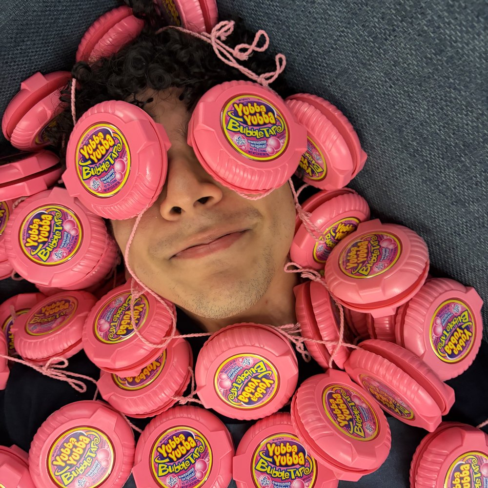

About Me

Hello! I am a senior at the Massachusetts Institute of Technology (MIT) studying mechanical engineering and design. I have a passion for building and designing across different mediums, as well as for learning about new machines/programs/techniques to build and design even more. I love any work that allows me the opportunity to create, though I am currently particularly interested in product design, consumer electronics, assistive technology, and machine/tool design.
I have a habit of letting myself sink into my work (see image above), but in my free time you can find me thrifting for semi-ironic shirts, making yet another playlist according to a peculiar naming convention, or in a makerspace working on picking up another hobby. Feel free to check out my resume below and/or reach out with any questions!